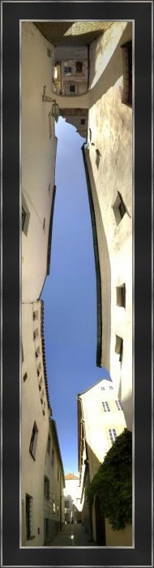

My Creative Side
Screenwriting. Game design. Narrative design. Visual Design. UX.
I didn't start out as a programmer, and in fact my degree is in Film Production. I've always been intrinsically creative. I use creativity to stand out. I use creativity to solve problems. But mostly I use creativity to make things more fun and more interesting.

My original way to creatively express myself was primary visual, in a number of mediums, including hand-drawn and digital artwork, 3D graphics, and photography.
After earning my degree in Film Production, I became more and more focused on storytelling, and focused my creative expression on screenwriting.
Recently, I have shifted my focus again, and now apply my creative attention to game design, and the overlap of screenwriting and story in games.
One interesting aspect of having such a wide a range of interests, is that many of my disciplines overlap. This leads to unique situations to creatively use elements from one discipline in another. Another benefit is that I often have a unique perspective, and can pull back to see the "big picture" from a different angle.
Creative Work
Feature-length Screenplays

I've written a few screenplays including "Someone's Gotta Pay": A struggling PI gets a break when a local millionaire hires him to follow his wife. But when the wife turns up dead, the PI is the primary suspect, and must unravel a deeper chain of crimes to prove his innocence.
Some of my screenplays I've been turning into interactive fiction.
Game design

I constantly come up with creative game ideas. Some of them are playable online on my games portfolio.
Panoramic Photography
A collection of unique perspectives from my travels at home and abroad.
View gallery